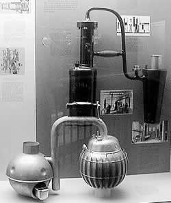

Thursday, August the 12th, 2004
back to: title, date or indexes
Not content with acting as amanuensis and printer to Dobson, inventing Chewism, and enjoying an unparalleled reputation as an aviatrix, Marigold Chew spent many hours locked away in her mysterious blue shed. Much banging, as if with hammers, and cranking, as if with hand-cranks, could be heard by the curious passer-by, but Ms Chew never allowed anyone through the reinforced door. Only after her untimely death did a shameless newshound called Ned Pismire clamber in by tearing out a few planks from the side wall of the shed. He was a skinny man. The interior was impeccably neat, and there were over four dozen pencil drawings of hummingbirds pinned up in a sort of frieze. Many unopened jars of [illegible] paste stood clustered in one corner. In the opposite corner, spread on the floor, lay a flag which Chew had been planning to darn. On one wall hung all of her tools, including a selection of hammers and hand-cranks, among other things. There was a VerEecke chair and table. A flimsy magazine rack made entirely from the bones of slaughtered cormorants held a year's worth of the Reader's Digest, each copy frantic with Chew's scribbled marginalia. Some pages had been torn out, crumpled, and thrown into a wastepaper bin. This bin was made of cork. When Ned Pismire looked up, he noticed that through the skylight he could see the tips of the branches of a titanic cedar tree, the tree that was the “dark, brooding, vegetable presence of my every waking thought” as Chew wrote, somewhat melodramatically, in a letter to Valentine Pote. In the middle of the shed, surrounded by an electrified wire fence, stood the machine Chew spent years building, the object of all that banging and clanking. Its purpose remains unknown, and Chew left no working notes. Ned Pismire, eagle-eyed though he undoubtedly was, failed to spot that the big red rectangular box housing the generator which powered the protective fence had a bright yellow knob on it clearly set to ON. In his eagerness to examine the machine, he took off his moleskin gloves and reached to rattle the handle of the narrow gate set into the fence, whereupon he was electrocuted. When his charred and frazzled corpse was discovered some days later, it was thought at first that his had been a case of spontaneous human combustion. That was what the frightened urchin who found him told the postman. The postman's name was Rex, and he was the coroner's pal.

Marigold Chew's machine (artist's impression)